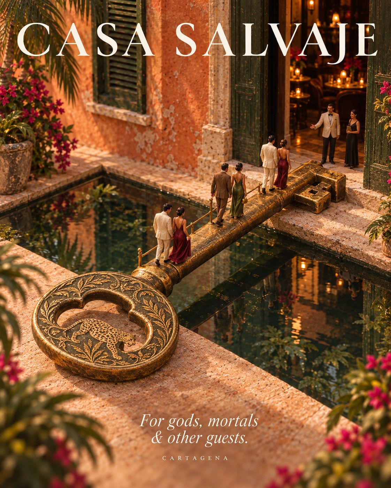

Hoteles de lujo en la ciudad amurallada: Townhouse, Casa del Arzobispado, Bastión, Casa Pestagua y más
El nuevo Four Seasons en Getsemaní, azoteas con piscina y casas de pocas habitaciones: los hoteles de lujo de Cartagena, casi todos a una caminata de Casa Salvaje.
Read in English →
Dormir dentro de la ciudad amurallada cambia el viaje: sales a caminar de noche, vuelves a pie después de cenar y te despiertas con las campanas de la Catedral. Estos son los hoteles que recomendamos, empezando por el más nuevo de la ciudad.
Four Seasons Hotel and Residences Cartagena
Abrió en abril de 2026 en Getsemaní, justo afuera de la muralla, y es el hotel más ambicioso que ha tenido Cartagena en años. Ocupa edificios históricos restaurados: el Claustro de San Francisco, con su iglesia del siglo XVI, el Club Cartagena de los años veinte y varios teatros antiguos. Tiene 131 habitaciones y suites, 27 de ellas en las casas coloniales, el Umari Spa y ocho restaurantes y bares: The Grand Grill, la parrilla de Major Food Group en el antiguo Club Cartagena; El Aljibe, un speakeasy dentro de un antiguo aljibe; y El Palmar, la terraza con vista a la bahía. Desde Getsemaní se cruza a pie al Centro en pocos minutos.
Townhouse
A pasos de la Plaza Fernández de Madrid, pocas habitaciones y dos bares: la azotea, con piscinas pequeñas y vista sobre los tejados, y el bar del lobby, que los fines de semana se vuelve speakeasy con jazz. Para quien quiere ambiente sin salir del hotel.
Casa del Arzobispado
Junto a la Catedral, en la que fue residencia arzobispal, un hotel de pocas habitaciones con un ambiente muy tranquilo. En la misma calle está Época, uno de nuestros cafés favoritos para empezar el día.
Bastión Luxury Hotel
Uno de los hoteles boutique de lujo más grandes de la ciudad amurallada, levantado sobre una casa colonial que conserva sus patios interiores. Tiene piscina en la azotea con vista a las cúpulas del Centro, restaurante, spa y gimnasio, ideal si buscas servicio de hotel grande en una calle tranquila.
Casa Pestagua
Una mansión aristocrática colonial convertida en hotel, con patios y suites amplias. Fue el primer miembro de Relais & Châteaux en Colombia y fue premiado como el mejor hotel histórico del continente.
La Passion
Una casa de ocho habitaciones con pisos de piedra ajedrezados, balcones y escaleras que suben hasta una azotea con piscina y bar, con vista de primera fila a la Catedral.
Casa La Cartujita
En la Calle del Curato, una mansión colonial restaurada con pocas habitaciones y una piscina interior pequeña. Íntima y silenciosa, para quien quiere sentir que la casa es suya.
Frente al mar: Las Américas
Si prefieres playa a calle colonial, Las Américas es el gran resort de la zona norte, frente al mar, con piscinas, centro de convenciones y su restaurante insignia: Erre de Ramón Freixa, en el piso 10 de la Torre del Mar, donde el chef catalán cruza la cocina española con el Caribe colombiano. Queda a unos 15 minutos en carro del Centro.
Casi todos quedan a pocas cuadras de Casa Salvaje, en la Calle Santa Teresa #32-41. Kanibal abre desde el mediodía, SLVJ sirve la cena desde las 7 pm y, de jueves a sábado, el club sigue hasta las 3 am. Mira los horarios.
¿Buscas más opciones? Lee hoteles boutique en el Centro Histórico, más hoteles boutique y dónde quedarse en Cartagena.